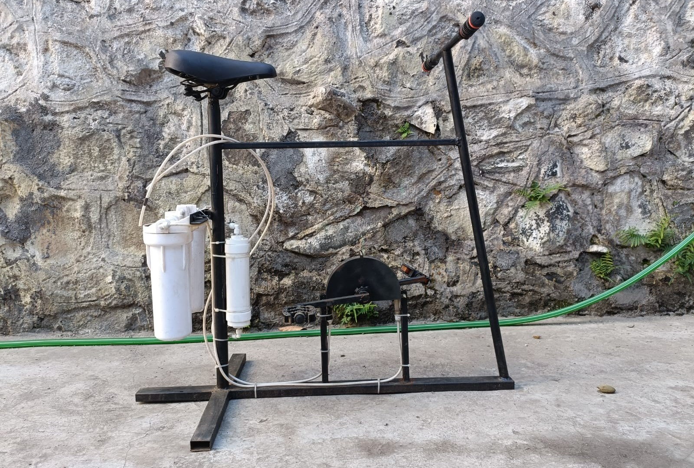
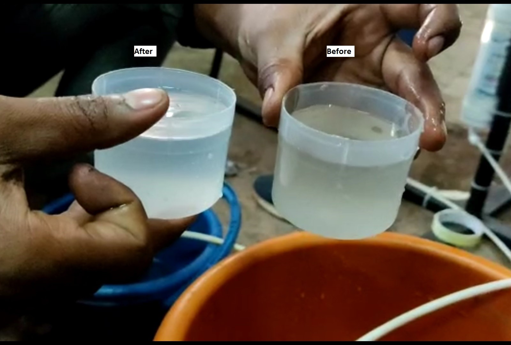
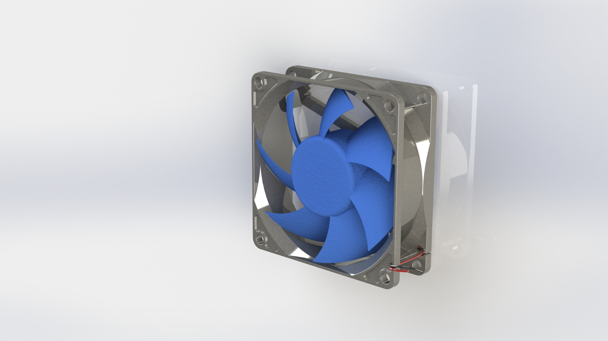
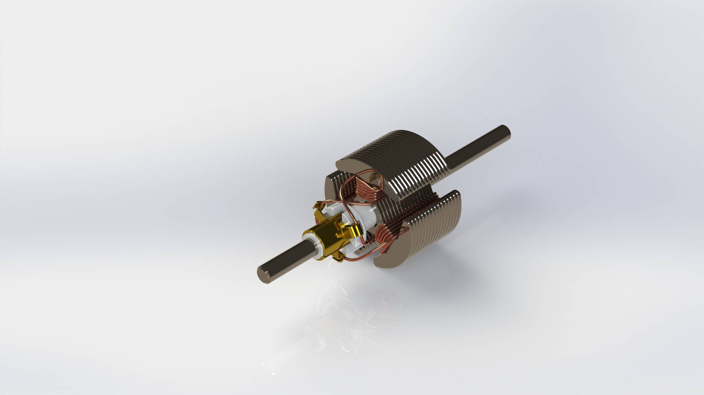

I'm a Mechanical Engineering Graduate from MVP's KBT College Of Engineering, Currently a production supervisor at CEAT Ltd. I manage the daily complexities of manufcturing from shift schedules to overseeing inventory and supply chains, I ensure that production goals are met through organized managements and technical expertise.


Engineered a pedal-powered water purification system specifically calibrated to provide the consistent torque required to actuate a peristaltic pump via rotary motion.
Achieved a consistent discharge flow rate of 0.6 Liters/Minute at a 60 RPM pedaling cadence, balancing physical effort with filtration efficiency.
Integrated a dual-stage filtration assembly consisting of a sediment filter and a turbidity filter, ensuring the removal of suspended solids and physical impurities.


Designed and modeled a rotating PC fan in SolidWorks, focusing on accurate representation of blade geometry and rotational motion.
Also developed a detailed 3D model of a DC motor rotor, Successfully captured the complex geometry, including the core laminations, windings, and commutator.
Email: rohitdpingle@gmail.com